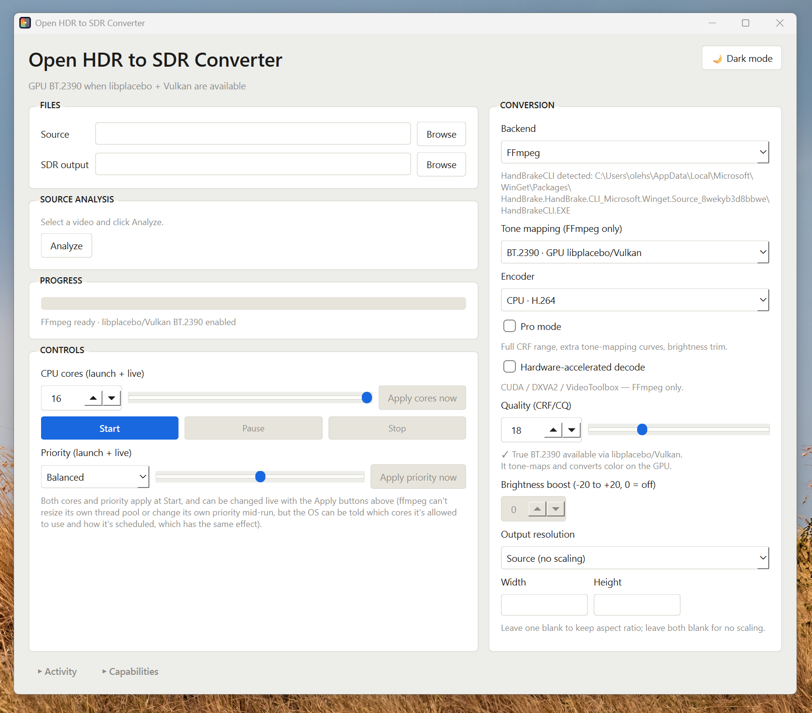

A desktop tone-mapping tool for people who care which curve they're using. Standard FFmpeg mapping for speed, true BT.2390 on the GPU for accuracy, and an experimental HandBrakeCLI path — all in one window, with the actual command being run always visible.

Same source video, three genuinely different pipelines. Nothing is hidden behind an "auto" button — the backend and curve you choose are the exact ones that run.
The classic tonemap filter. Fast, works everywhere FFmpeg does, no GPU required.
Runs the real ITU-R BT.2390 EETF on the GPU via libplacebo, the same curve reference HDR-to-SDR grades are built around.
An alternate encode path through HandBrakeCLI for cases where its own pipeline behaves better on a given source.
Built around the parts of a tone-mapping job that actually go wrong on real footage: the wrong curve, the wrong encoder, or a process that steals the whole machine while it runs.
Source (no scaling), 4K, 1440p, 1080p, 720p, 480p, or a custom width/height.
x264/x265 on CPU, or hardware encode via NVIDIA NVENC, AMD AMF, or Apple VideoToolbox, in H.264 or H.265.
Opens the full CRF/CQ range (0–51), a brightness offset control, and the extra tone-map curves — kept out of the way until you ask for them.
CUDA / DXVA2 / VideoToolbox decode for the FFmpeg backend, so the GPU is doing the reading as well as the tone-mapping.
Efficiency, Balanced, or Performance — maps straight to OS process niceness, so a long batch doesn't have to lock up the rest of your machine.
A collapsible live log streams the actual FFmpeg/HandBrake output and progress; a Capabilities panel reports what's detected on your system — FFmpeg, Vulkan, HandBrakeCLI — before you hit convert.
Missing FFmpeg or HandBrakeCLI is installed via winget from inside the app, with install output streamed into Activity.
A Windows build if you just want to run it, or the source if you're on macOS/Linux or want to read the code first.
Single-file build, no Python required. FFmpeg is still needed separately — or install it in-app via winget.
Always the newest release · Windows 10/11
Requires Python 3.10+ and pip install -r requirements.txt. Runs on Windows, macOS, and Linux.
MIT licensed · main branch
The app is a single PySide6 script. No installer, no background service — you run it, it shells out to FFmpeg (and optionally HandBrakeCLI) directly.
What needs to be on the machine before you launch it.
| Component | Needed for |
|---|---|
| Python 3.10+ | Running the app itself |
| PySide6 | The Qt-based UI |
| FFmpeg | Standard and GPU tone-mapping backends |
| Vulkan-capable GPU + drivers | The libplacebo/BT.2390 backend specifically |
| HandBrakeCLI (optional) | The experimental HandBrake backend |
| psutil (optional) | Nicer process-priority handling |
Three commands, then you're looking at the window.
# 1. Get the script and its Python dependencies pip install PySide6 psutil # 2. Make sure FFmpeg is on your PATH ffmpeg -version # 3. Launch python hdr_to_sdr_gui_qt.py
From HDR source file to SDR output.
All of these are real, documented FFmpeg/libplacebo tone-mapping options — nothing here is invented.
| Curve | Backend | When to reach for it |
|---|---|---|
| BT.2390 | GPU | Default choice — the reference EETF most HDR-to-SDR grades target |
| Hable | CPU | Filmic rolloff, no GPU needed |
| Reinhard / Mobius | CPU | Softer highlight rolloff alternatives to Hable |
| BT.2446A | GPU · Pro | Broadcast-oriented alternative to BT.2390 |
| ST2094-10 / ST2094-40 | GPU · Pro | Dynamic tone-mapping; ST2094-40 uses HDR10+ metadata when present |
| Linear / Gamma / Clip / None | CPU · Pro | Diagnostic or manual-grading passes, not general use |
The Capabilities panel is the first stop — it reports exactly what was detected before you file this as a bug.